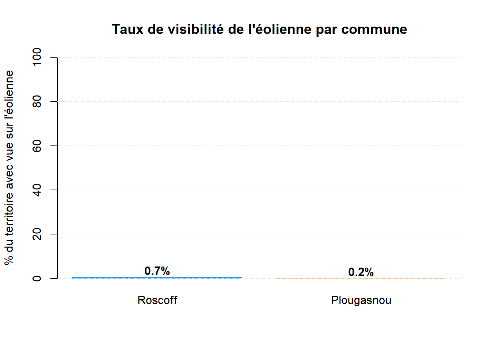

Dans notre analyse, le MNT a permis de prouver une différence majeure entre les deux communes.
Même si la distance à la côte est la même, la topographie diffère : Roscoff est relativement plat, la topographie est celle d’un plateau littoral. La visibilité du parc éolien est quasi-totale depuis le centre historique et le port. L’éolienne n’est pas seulement un objet lointain, elle devient un nouvel élément de l’horizon qui entre en concurrence directe avec le clocher de Notre-Dame-de-Croaz-Batz. La vue sur mer est omniprésente depuis le centre-ville.
Alors que Plougasnou possède un relief plus accidenté (falaises, pointes) ce qui crée des “zones d’ombre”. Une partie importante de la population résidant en retrait de la côte ou dans les dépressions topographiques n’aura aucune vue directe sur les machines. Les éoliennes peuvent être visibles depuis certains sommets, mais totalement masquées pour les habitants vivant dans les creux de vallons.
# Zone d'étude
point <- st_sfc(st_point(c(-3.85, 48.65)), crs = 4326)
zone <- st_buffer(st_transform(point, 2154), 20000)
# Téléchargement MNT et communes
mnt <- get_wms_raster(x = zone,
layer = "ELEVATION.ELEVATIONGRIDCOVERAGE.HIGHRES",
res = 25,
crs = 2154)## 0## ...10...20...30...40...50...60...70...80...90...100 - done.communes <- get_wfs(x = zone,
layer = "ADMINEXPRESS-COG-CARTO.LATEST:commune")
zone_etude <- communes[communes$nom_officiel %in% c("Roscoff", "Plougasnou"), ]
# Point éolienne
eolienne_sfc <- st_sfc(st_point(c(-3.95, 48.72)), crs = 4326)
eolienne_proj <- st_transform(eolienne_sfc, 2154)
eolienne <- st_sf(geometry = eolienne_proj)
# Calcul viewshed
coords <- st_coordinates(eolienne)
visibilite <- viewshed(mnt,
loc = c(coords[1], coords[2]),
observer = 180,
target = 1.75)
# Découpage par commune
roscoff <- zone_etude[zone_etude$nom_officiel == "Roscoff", ]
plougasnou <- zone_etude[zone_etude$nom_officiel == "Plougasnou", ]
roscoff_vect <- project(vect(roscoff), crs(visibilite))
plougasnou_vect <- project(vect(plougasnou), crs(visibilite))
visib_roscoff <- crop(visibilite, roscoff_vect, mask = TRUE)
visib_plougasnou <- crop(visibilite, plougasnou_vect, mask = TRUE)
# Calcul taux
calc_taux <- function(r) {
f <- freq(r)
visible <- f$count[f$value == 1]
total <- sum(f$count)
if (length(visible) == 0) return(0)
round((visible / total) * 100, 1)
}
taux_roscoff <- calc_taux(visib_roscoff)
taux_plougasnou <- calc_taux(visib_plougasnou)
# Barplot
barplot(c(taux_roscoff, taux_plougasnou),
names.arg = c("Roscoff", "Plougasnou"),
col = c("#2196F3", "#FF9800"),
main = "Taux de visibilité de l'éolienne par commune",
ylab = "% du territoire avec vue sur l'éolienne",
ylim = c(0, 100),
border = NA)
abline(h = seq(0, 100, 20), col = "grey90", lty = 2)
text(x = c(0.7, 1.9),
y = c(taux_roscoff + 3, taux_plougasnou + 3),
labels = paste0(c(taux_roscoff, taux_plougasnou), "%"),
font = 2)
L’opposition à Plougasnou est donc plus localisée (riverains directs), tandis qu’à Roscoff, elle est globale car elle touche à l’image de marque de la cité.
[cartes carroyage résidence secondaire]
Ensuite, on observe une corrélation entre visibilité et enjeux socio-économiques, lorsque l’on fait le croisement avec le carroyage Filosofi. Les zones ayant la plus forte visibilité sur le parc coïncident souvent avec les quartiers à haut taux de résidences secondaires (comme le front de mer). Pour ces propriétaires, pour qui l’éolien est perçu comme une nuisance visuelle, on comprend que l’enjeu de la visibilité est primordial et peut devenir l’un des premiers motifs d’opposition à l’implantation éolienne.
L’analyse spatiale croisée révèle que l’acceptabilité sociale dans le Finistère n’est pas distribuée de manière aléatoire, mais répond à une logique de pression foncière et de visibilité.
Le carroyage Filosofi permet de confirmer que les zones à forte concentration de résidences secondaires se situent précisément sur les lignes de front visuel. Pour les propriétaires, dont l’investissement est avant tout lié à la “valeur de contemplation”, le projet éolien est perçu comme une dépréciation directe de leur patrimoine. En définitive, le niveau d’acceptabilité est inversement proportionnel à l’exposition visuelle des zones à haute valeur immobilière : là où le relief ne peut servir de bouclier, la résidence secondaire devient le principal foyer de contestation.
Le SIG démontre que le potentiel éolien est une donnée physique, mais que l’acceptabilité est une donnée territoriale. Pour réussir l’implantation d’un projet, il ne suffit pas de calculer la force du vent : il faut comprendre la structure invisible des usages et la sensibilité des lignes de crête.